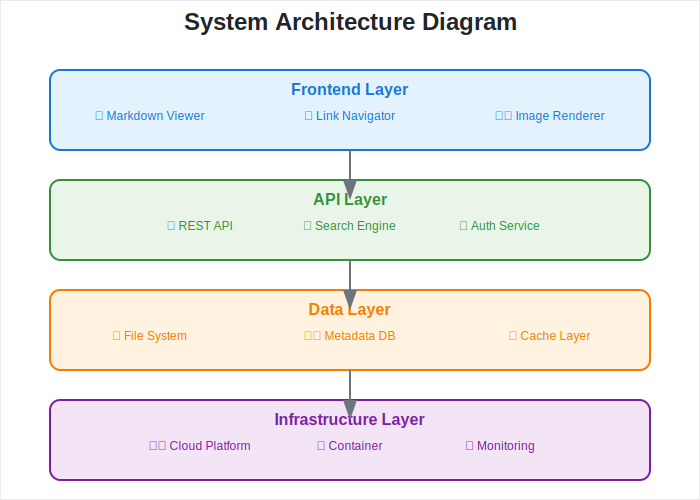

📋 Project Overview
 Project Overview
Project Overview
Purpose
This project aims to provide efficient document management and
information sharing.
Key Features
- ✅ Structured documents
- ✅ Navigation through interconnected links
- ✅ Visual diagrams and images
Architecture Overview
For detailed system architecture, please refer to the Architecture page.

System Overview
Next Steps
- Set up with the Getting
Started guide
- Learn basic usage in the User
Guide
- Configure your development environment with the Developer Guide
Navigation